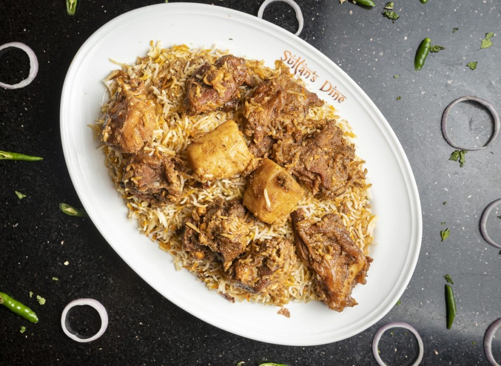

Food 1: Kacchi Biriyani
‘Kacchi’ means ‘raw’ in English. Unlike most other types of Biriyani, the meat used in this dish is first marinated with spices and placed at the bottom of the cooking pot uncooked. The rice, which is first washed and then mixed with spices, is added on top, before the meat and rice are cooked together. Sometimes potato is added to the mix to add body to the dish.
Food 2: Shorshe Ilish (Hilsa Fish with Mustard Curry)
Shorshe Ilish is a dish consisting of hilsa fish cooked in savory mustard gravy, commonly served with white rice for a hearty, must-try meal. The mustard is cooked with various spices, giving it plenty of heat and kick. Once the mustard reaches a gravy-like consistency, the hilsa fish is added and cooked until tender. This is a dish that bursts with flavor, and it is beloved across the country.
Food 3: Beef Kala Bhuna
Kala Bhuna gets its name from its appearance, as 'kala' means 'black'. The meat - which can be beef or mutton - is cooked with a long list of traditional spices and yogurt. It is cooked for much longer than in other curries, which gives the meat a blackish hue. It also tastes different than regular beef curry.
Food 4: Sheek Kebab with Naan
Roshogolla is a simple, wholesome dish. It is made from cottage cheese, which is strained from fresh milk and kneaded until soft. The cheese is pressed and rolled into balls, then boiled in sugar syrup until fluffy and spongy. Roshogolla can be eaten hot, fresh off the stove, or stored in the refrigerator and eaten as a chilled dessert.
Food 5: Roshogolla
Kala Bhuna gets its name from its appearance, as ‘kala’ means ‘black‘. The meat – which can be beef or mutton – is cooked with a long list of traditional spices and yogurt. It is cooked for much longer than in other curries, which gives the meat a blackish hue. It also tastes different than regular beef curry.
KACCHI BIRIYANI
Here a website link of Kacchi Biriyani recipe: Click for Recipe